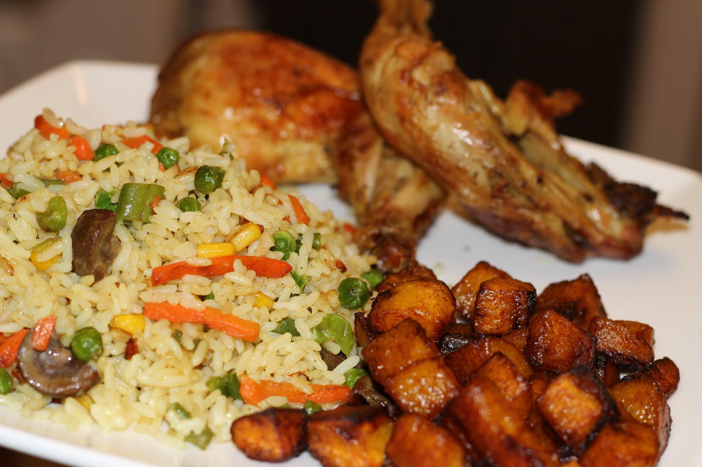
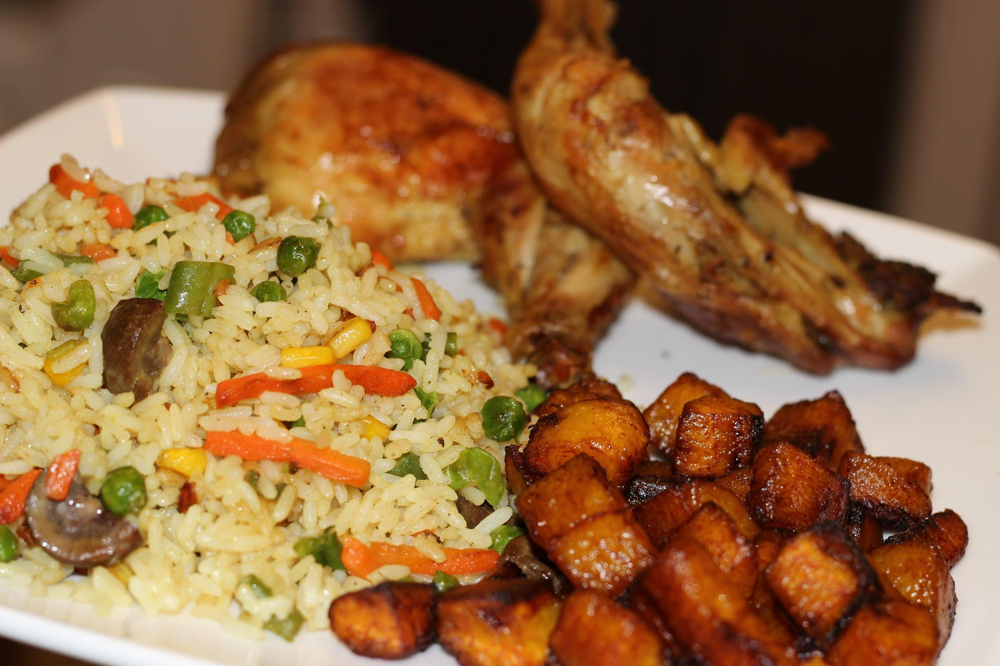
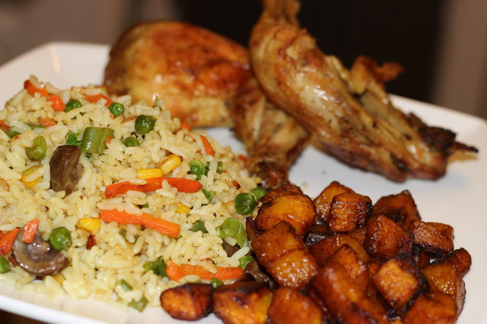
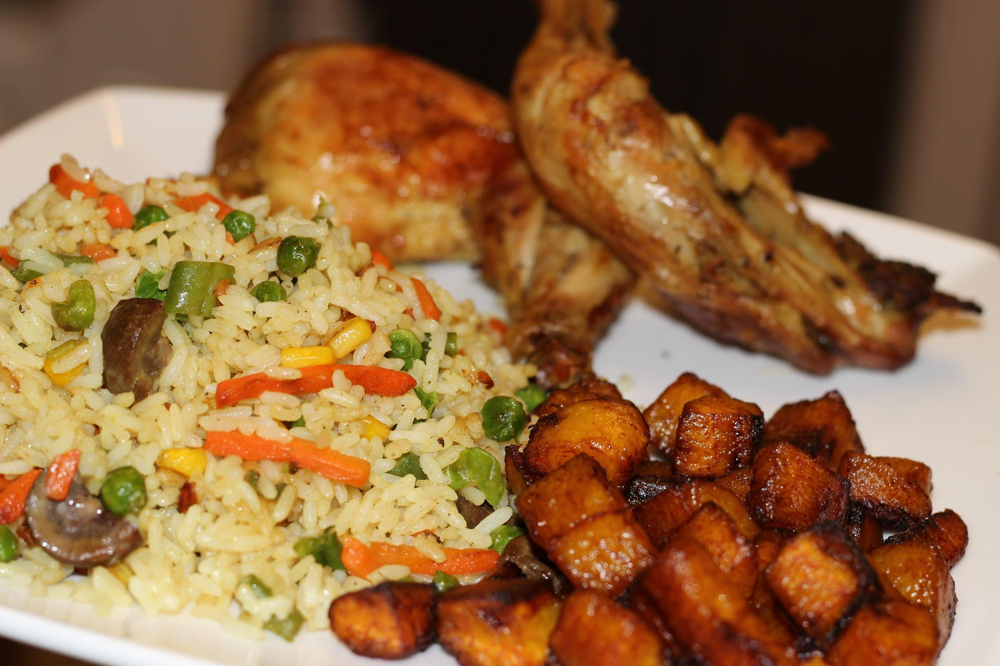

Nigerian cuisine is a vibrant tapestry of flavors, rich in tradition and culture. From the bustling markets to family dinner tables, these staple foods bring people together and offer a taste of Nigeria's heart and soul:
 

 

Nigerian cuisine is a vibrant tapestry of flavors, rich in tradition and culture. From the bustling markets to family dinner tables, these staple foods bring people together and offer a taste of Nigeria's heart and soul:
| Dish Name | Culinary Note | |
|---|---|---|
| 1. | Jollof Rice | A celebration in a dish, Jollof rice is a flavorful blend of rice, tomatoes, peppers, and a symphony of spices. Each bite is an explosion of taste, and it's a symbol of joy in Nigerian gatherings. |
| 2. | Egusi Soup | With its velvety, nutty goodness, Egusi soup is a warm embrace. Made from melon seeds and leafy greens, it's a comfort food that wraps you in its earthy aroma. |
| 3. | Amala and Ewedu | The dark and chewy Amala harmonizes with the green, slimy Ewedu soup. Together, they dance on your taste buds, offering a unique blend of textures and flavors. |
| 4. | Pounded Yam and Egusi Soup | A match made in heaven, pounded yam's smooth texture pairs wonderfully with the thick, luscious Egusi soup. It's a meal that nourishes the body and soul. |